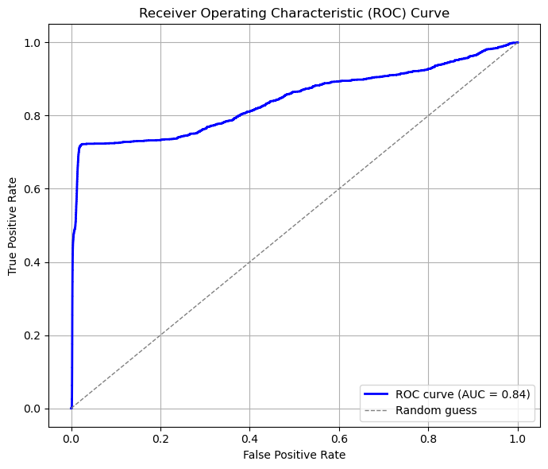

.png)
.png)
.png)

.png)
📊 Logistic Regression Model Evaluation Report
📌 Overview
- Model: Logistic Regression
- Resampling: SMOTE (10%) + RandomUnderSampler (balanced)
I use a low SMOTE ratio of 10% to avoid over-generating synthetic fraud samples. Fraud data is often heterogeneous, and high SMOTE ratios (e.g., 0.5) can create unrealistic combinations of dissimilar fraud cases. This synthetic noise may confuse the model and hurt test recall. A smaller ratio helps the model focus on core fraud patterns, reduces overfitting, and preserves the natural class imbalance—which reflects real-world fraud clustering. - Evaluation Focus: F2 score (recall-focused)
In credit card fraud detection, the cost of missing a fraudulent transaction (false negative) is typically much higher than flagging a legitimate one (false positive). Therefore, I use the F2 score to prioritize recall over precision during model evaluation.
🔠Threshold Optimization
- Best threshold for F2: 0.9758
- Maximum F2 score: 0.4091
📈 Performance Metrics
📉 Precision-Recall Curve

📉 ROC Curve

📋 Classification Report (at F2-optimized threshold)
📋 Classification Report (at F2-optimized threshold)
| Class | Precision | Recall | F2-Score | Support |
|---|---|---|---|---|
| Non-Fraud | 0.998 | 0.996 | 0.997 | 553,574 |
| Fraud | 0.287 | 0.458 | 0.353 | 2,145 |
🧮 Confusion Matrix
| Predicted: 0 | Predicted: 1 | |
|---|---|---|
| Actual: 0 | TN = 551,132 | FP = 2,442 |
| Actual: 1 | FN = 1,163 | TP = 982 |
📊 Summary
The model demonstrates strong discriminatory ability (ROC AUC: 0.8341) and moderate fraud recall (45.8%) at the F2-optimized threshold, but its low precision (28.7%) and modest PR AUC (0.1401) highlight the challenges of rare-event detection and indicate that further filtering or post-processing would be necessary for reliable production use.
📊 Random Forest Model Evaluation Report
📌 Overview
- Model: Random Forest
- Resampling: SMOTE (10%) + RandomUnderSampler (balanced)
I use a low SMOTE ratio of 10% to avoid over-generating synthetic fraud samples. Fraud data is often heterogeneous, and high SMOTE ratios can introduce unrealistic patterns that reduce model generalization. A small ratio preserves natural class imbalance and helps focus on core fraud patterns. - Evaluation Focus: F2 score (recall-focused)
In credit card fraud detection, false negatives are more costly than false positives. Therefore, F2 is used to prioritize recall over precision.
🔠Threshold Optimization
- Best threshold for F2: 0.7800
- Maximum F2 score: 0.6433
- F2 score at threshold: 0.6395
📈 Performance Metrics
- OOB Score (on resampled train): 0.9948
📉 Precision-Recall Curve

📉 ROC Curve

📋 Classification Report (at F2-optimized threshold)
| Class | Precision | Recall | F1-Score | Support |
|---|---|---|---|---|
| Non-Fraud (0) | 0.999 | 0.997 | 0.998 | 553,574 |
| Fraud (1) | 0.472 | 0.702 | 0.565 | 2,145 |
🧮 Confusion Matrix
| Predicted: 0 | Predicted: 1 | |
|---|---|---|
| Actual: 0 | TN = 551,892 | FP = 1,682 |
| Actual: 1 | FN = 640 | TP = 1,505 |
🧠Feature Importance Analysis
🌲 Gini Importance
What it measures: How frequently a feature is used in the decision trees and how much it reduces node impurity (Gini index). Higher values indicate more frequent and effective splits.
The Gini-based ranking shows amt as the dominant feature (~0.7), followed by category_Code (~0.18). Other features such as age_scaled and job_freq contribute minimally to the tree structure.
🧪 Permutation Importance
 What it measures: How much a feature contributes to the model's predictive performance (e.g., F2 score), by observing performance drops when the feature is randomly shuffled.
What it measures: How much a feature contributes to the model's predictive performance (e.g., F2 score), by observing performance drops when the feature is randomly shuffled.
The permutation results confirm that both amt and category_Code are crucial to the model. Their removal causes a significant decline in F2, indicating strong real-world importance.
🔠SHAP Waterfall Plots (Top 3 Fraud Cases)

These plots highlight how
amt and category_Code consistently act as strong positive contributors to fraud predictions in all three cases.
Conclusion: amt and category_Code are consistently the most influential features across Gini, permutation, and SHAP explanations. While Gini reflects tree structure, permutation ties directly to predictive performance, and SHAP gives the most detailed per-instance explanation.
📊 Summary
The Random Forest model achieves excellent ROC AUC (0.9783) and strong PR AUC (0.6044), showing effective separation of fraud and non-fraud transactions even under class imbalance. At the F2-optimized threshold of 0.78, the model captures 70.2% of fraud cases with 47.2% precision, reflecting a solid recall-focused trade-off. The out-of-bag (OOB) score on the resampled training set is 0.9948, indicating good model generalization. However, the relatively low precision highlights the need for further filtering or downstream verification in production use.
📦 Cost Evaluation
To evaluate the cost performance of the model, I first defined a cost ratio between false negatives (FN) and false positives (FP) as 50:1. In this case, each FN was assigned a cost of $500, and each FP a cost of $10. These values reflect the real-world impact of fraud detection, where failing to detect a fraud (FN) is far more costly than mistakenly flagging a normal transaction (FP).
Note: Using these cost values, I calculated the total cost for different decision thresholds on the test set. The graph above shows how total cost changes as the probability threshold varies in the logistic model. It is clear that when the threshold is between 0.0 and 0.2, the total cost stays extremely high, around $3.8 million. This is likely because, at low thresholds, the model predicts too many positives, increasing the number of false positives.As the threshold increases, the total cost drops sharply, reaching the minimum point at a threshold of 0.65. This threshold represents the best trade-off between FPs and FNs, resulting in the lowest total cost. After this point, the total cost begins to rise again, but at a slower rate, remaining below $1.5 million. This suggests that the model performs best when the threshold is set around 0.65, with the minimum cost of $0.38 million helping reduce overall losses from fraud detection errors.

Note: Unlike the logistic regression model, the cost curve for the random forest model appears much smoother, with less fluctuation. As the probability threshold increases, the total cost slightly decreases at first, reaching its minimum at a very low threshold of 0.08. At this point, the minimum total cost is approximately $130,000. After this optimal threshold, the total cost starts to rise steadily. The cost reaches its highest point when the threshold is close to 1.0. This increase happens because, as the threshold becomes higher, fewer transactions are flagged as fraudulent. As a result, more fraud cases are missed, leading to a growing number of false negatives, which are far more costly in this scenario. Overall, the graph suggests that the random forest model performs best at a low threshold, around 0.08, where it can catch more fraud cases early and minimize total cost. This highlights the model’s strength in detecting fraud even with relatively low prediction probabilities.